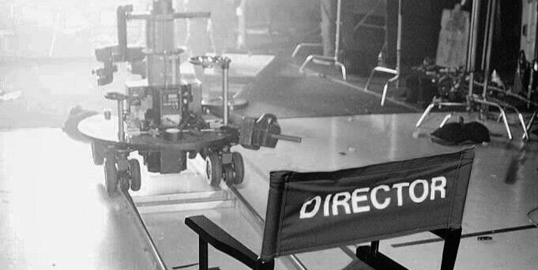

Lukáš Moravec
Náš první host pro náš první rozhovor je filmový publicista a tvůrce Totalfilm Podcast, Martin Mažári, se kterým jsme si povídali o aktuální situaci ve světě filmu.
Do kina lidé většinou chodí jen na blockbustery a ty malé projekty už nemají takovou pozornost diváka jako dříve. Myslíš, že mají malé projekty ještě v kinech u diváků šanci?
Martin: Tady strašně záleží, jestli jako rozpočtově, protože dneska jsem zrovna četl, že adaptace té hororové hry Five Nights at Freddy's vydělala vlastně neskutečná čísla. Že to defakto udělalo za první víkend dost podobná čísla jako Oppenheimer, který byl podpořený tou obrovskou meme komunitou. Určitě to nebyl drahý film, takže záleží na tom, jak velký event (událost) se těm studiím podaří okolo toho filmu vytvořit.
21. 4. 2024